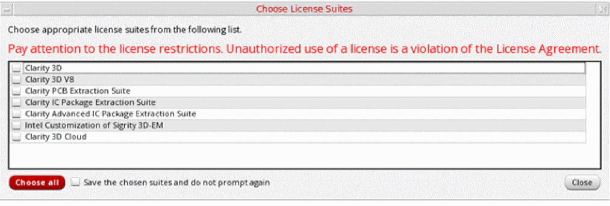
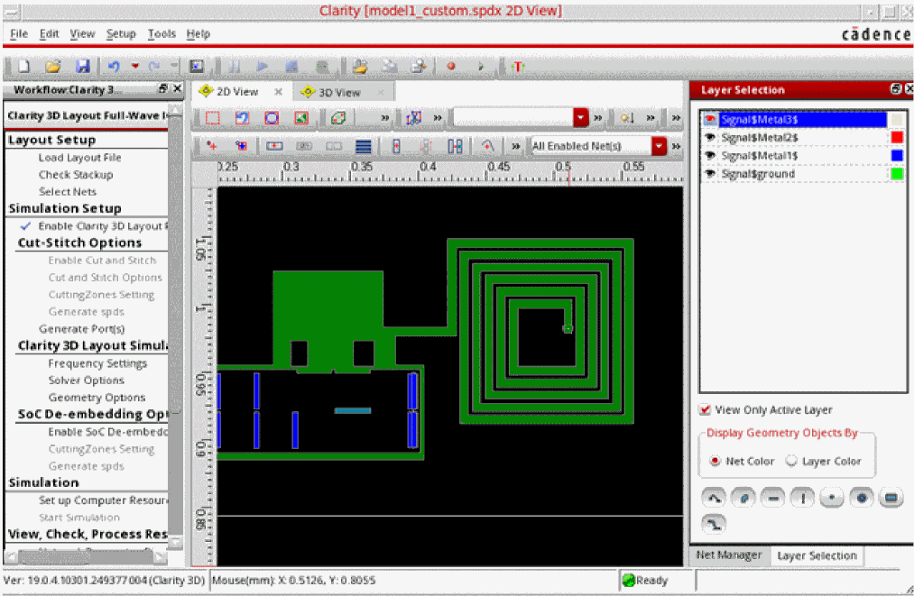
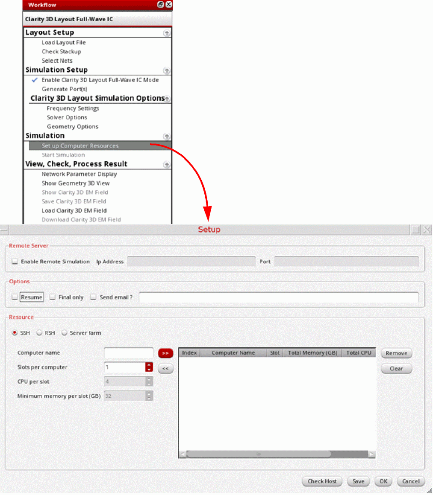
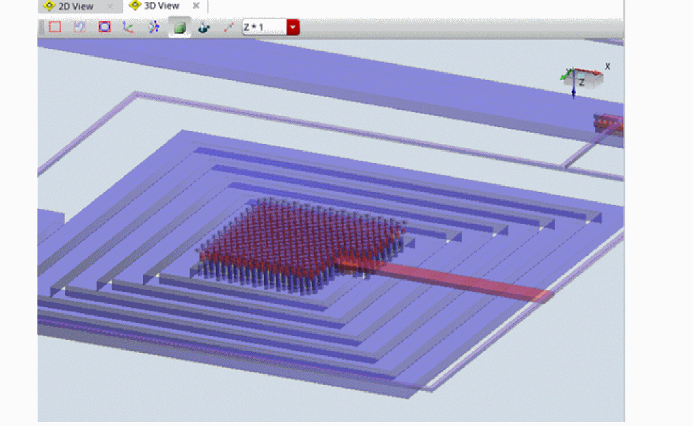
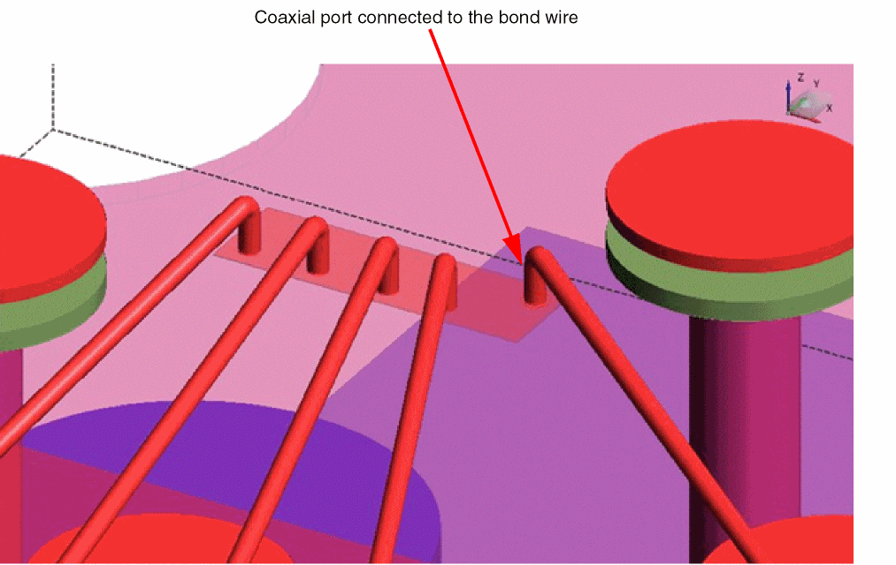

Running a Simulation using Clarity 3D Solver
Clarity 3D Solver uses a three-dimensional, full-wave, finite element method (FEM) field solver, and returns accurate simulation results.
To run a simulation using Clarity 3D Solver:
- Review the simulation settings on the Clarity tab of the Simulation Settings form.
- Select a model in the Models section.
-
Ensure that
Clarityis selected in the Simulator column. - (Optional) Review the EM layout to verify the geometries being sent to the solver for simulation.
-
Choose Simulator – Create and Edit on the toolbar of this assistant.
The Choose License Suites form is displayed. -
Select Clarity 3D and close the form.
To use the same license suite every time Clarity 3D Solver is launched, use the interpolationMethod shell environment variable to specify a default license suite. When this variable is set, Virtuoso looks for the specified license before launching Clarity 3D Solver. If found, it does not display the Choose License Suites form.After checking out the license, the tool does the following:- Loads the model definition and creates the layout database that is ready for simulation.
-
Saves the database in
.spdfiles. -
Opens the Clarity window and loads the
.spdfile. -
Displays the instances and nets you selected for inclusion in the model in the Clarity window.

- Make the following changes in the Layer Selection assistant:
-
Click Set up Computer Resources in the Workflow assistant to configure the setup.
The Setup form is displayed. -
Depending on the resources you want to use for the simulation run, you can configure the settings to use a remote server farm or the localhost. However, ensure that the resource must have a minimum of 32GB memory per slot.
For details about the settings on the Setup form, refer to Chapter 3, Simulation Flow in the Clarity 3D Layout User Guide. -
After specifying the resources, click Save on the Setup form to save the setup.
Once done, the setup is saved in the~/.cadence/Clarity/configSave.jsonfile. This setup is automatically read from this file before running simulations. -
To review the model in 3D view, click Show Geometry 3D View in the View, Check, and Process Result section of the Workflow assistant.
The following figure shows an example 3D view of an inductor selected for a model.
For bond wires included in models, Clarity creates a coaxial port for the net connected to the bond wire, as shown in the example given below.
 -
Click Start Simulation on the toolbar of Sigrity Suite window to run simulation.
When the simulation is complete, the results are displayed in the Network Display tab. - To review the mesh created by Clarity, click Show Clarity 3D EM Field in the View, Check, and Process Result section of the Workflow assistant.
- You can review the results in the Network Display tab of this window or in Virtuoso Layout MXL, and then continue with backannotation of results.
Related Topics
Creating Extracted Views from Models
Return to top